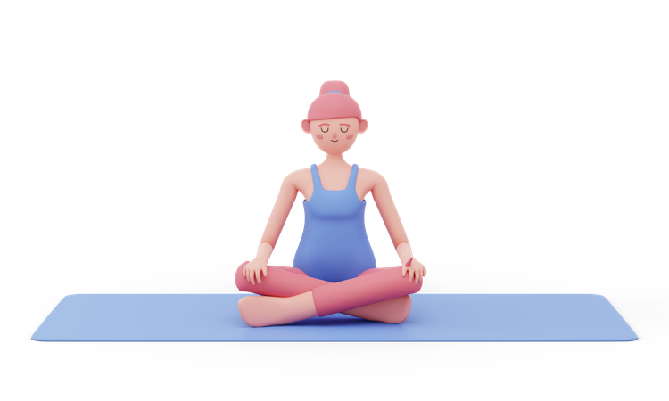

The colors of the seven main chakras of the human body include the seven colors of the rainbow, with the first chakra being the red with the longest wavelength and the seventh chakra being the purple with the shortest wavelength. The vibration frequencies of the seven chakras are also different, starting from the lowest frequency of the first chakra and increasing in order. The lower chakras are the foundation of the upper chakras, and incomplete development of the lower chakras, imbalance, or residual tension and pressure that have not yet been eliminated may damage the upper chakras, so if you want to enter the consciousness or behavioral qualities corresponding to the next chakra, you must first deal with the previous chakra.
